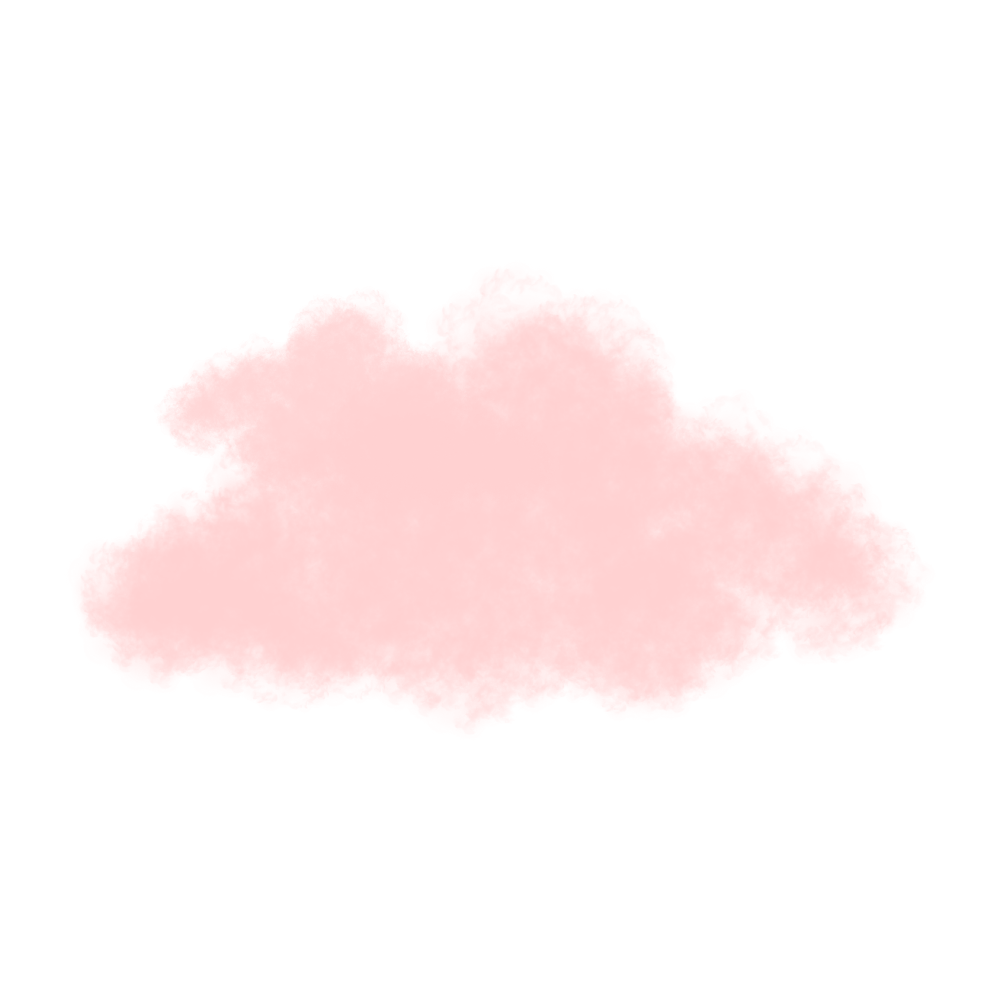
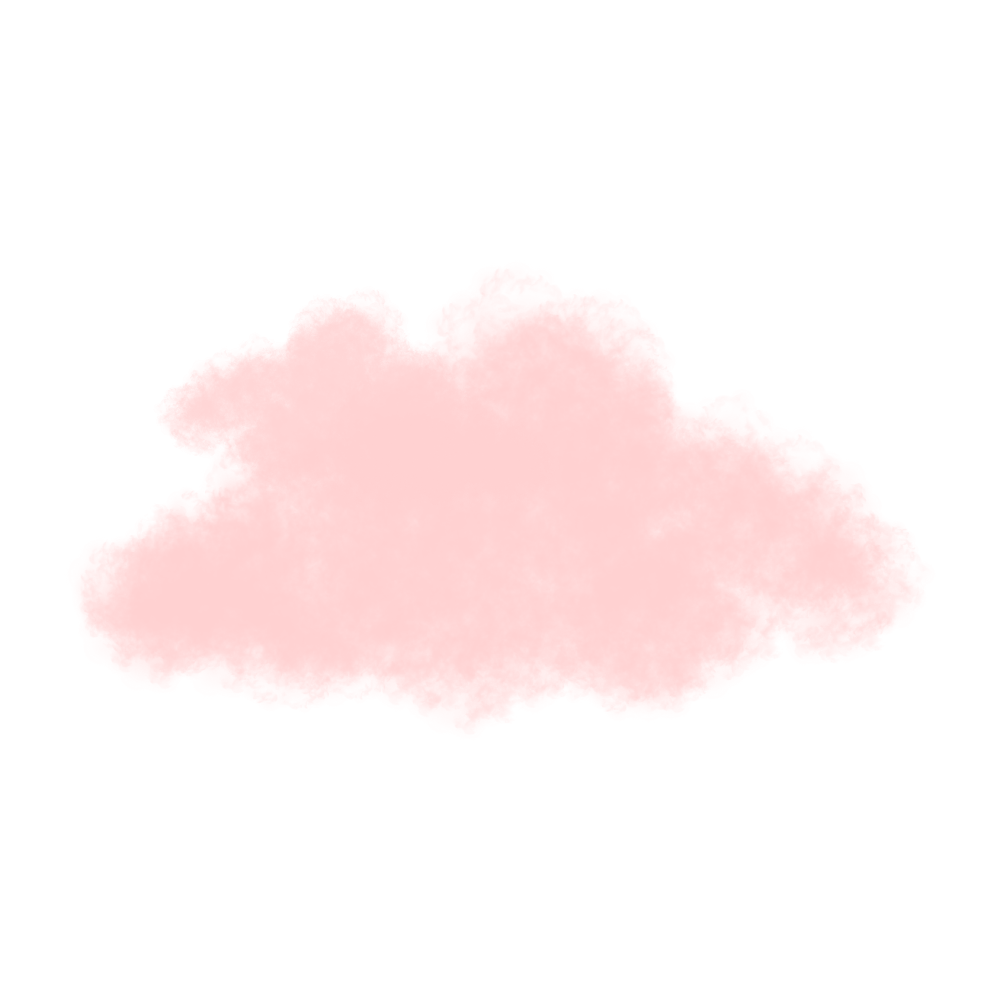

My name is Deniel Nicole Salcedo but everyone calls me nics or nicole. I am currently a second year college student at Rizal Technological University and I am studying Bachelor of Science major in Information Technology. My current hobbies are very simple: watching films, playing games, listening to music, singing, and making crafts/art. I am also very passionate in writing. Whenever I finish watching a film or series, I always go to letterboxd to rate them and write down my reviews or thoughts. Writing short poems is included also, in fact, I have a hundreds of poem that I wrote on my notes app. Life, solitude, dreams, and admiration are the one's that I write about, but most the time, my muse has always been myself and the other people that are dearest to me. That is because I am a firm believer that I am just a fragment; a mosaic of everyone I've ever loved, even for a heartbeat. And this site is a compilation of all the fragments that completes and define me. I'll show you around!!

Photography, for me, is all about capturing moments that often go unnoticed. I love how a single photo can tell a story, evoke an emotion, or freeze a fleeting moment forever. Whether it's the play of light at sunset, the small details in nature, or candid expressions of people, I find myself drawn to the beauty in everyday life. Through my camera, I get to explore the world from different perspectives, and each shot becomes a way of expressing how I see and experience life.

Watching films is my favorite pastime. It is a ritual that enriches my life in countless ways. It is where I experience a myriad of emotions and perspectives—narratives that are new but familiar to me. Films that are intricate is what defines me the most; audaciously bold but subtle.

Writing has always been my passion since I was little. It gives me clarity to write down my thoughts and articulate it into something that I will understand. For it never forced me to open up and say the things that I will regret later on, perhaps, it brings me a profound feeling where I can freely rewrite, reflect and undo the words that is uncertain to me.

Here are some of the projects I've worked on...
Portfolio Using Carrd.co
This project was implemented using drag and drop website builder.
View Project